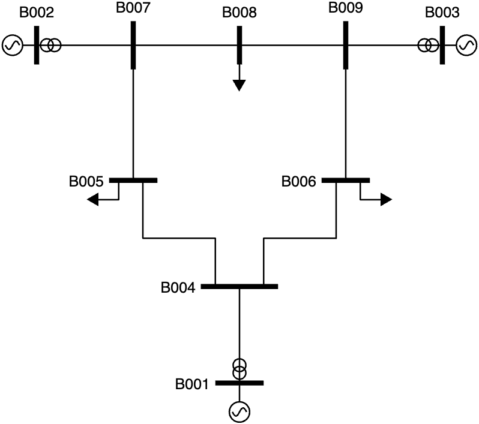
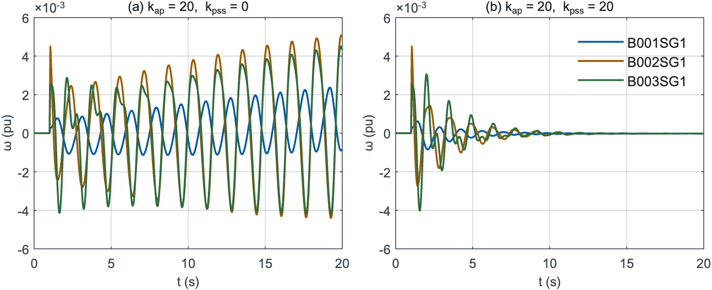
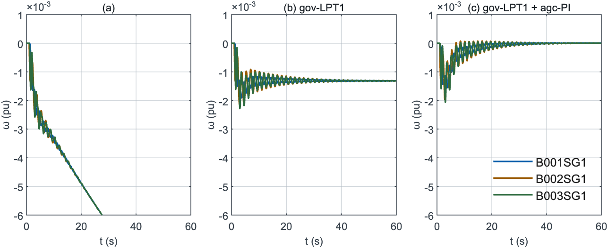
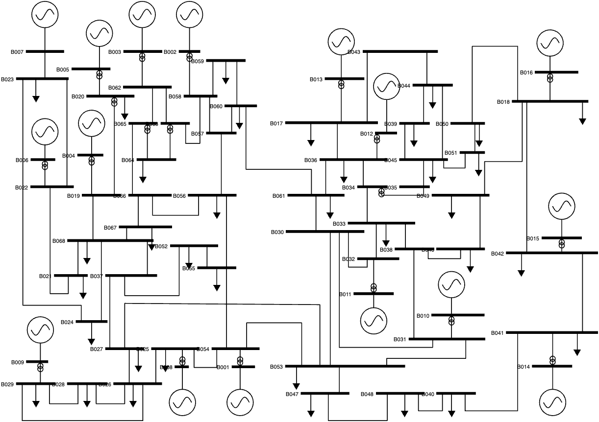
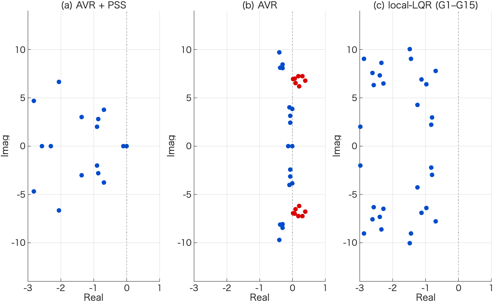
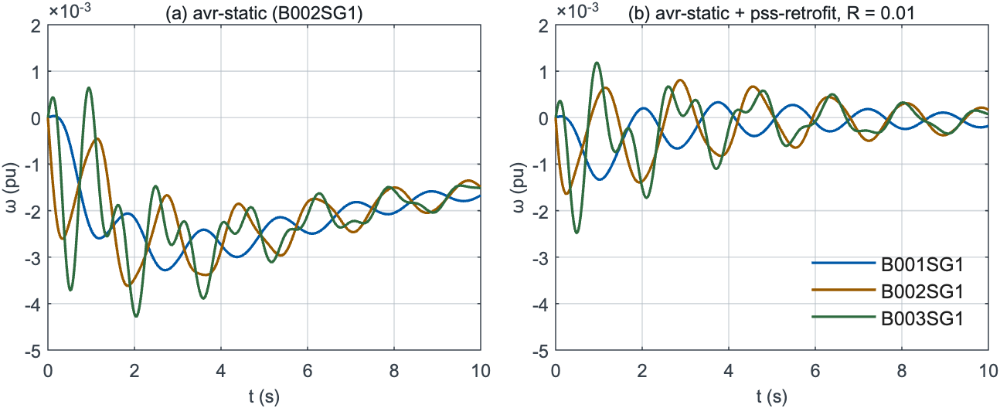

What this Part coversこの Part の内容
- What feedback is: measure, compare with a target, and act, and why a strong feedback can also make the system swing.フィードバックとは何か（測る、目標と比べる、働きかける）と、強すぎるフィードバックが揺れを生むこともある理由。
- What the AVR, the PSS and the governor of a generator observe and which input each drives, and how a PSS damps a swing, with IEEE 9-bus as the example.発電機の AVR・PSS・ガバナがそれぞれ何を観測し、どの入力を動かすかと、PSS が揺れを抑える仕組み。IEEE 9 母線系統を例にします。
- The hierarchy of frequency control: primary (governors), secondary (AGC) and tertiary control.周波数制御の階層（一次制御（ガバナ）・二次制御（AGC）・三次制御）。
- The ideas of global controllers and of the LQR, and of Retrofit control, which adds a controller using only a local model.グローバル制御器と LQR の考え方、部分のモデルだけで制御器を後付けする Retrofit 制御の考え方。
- How to think about your own controller: observe, compute, drive an input, and which GUILDA class plays each role.制御器を自作するときの考え方（観測 → 計算 → 入力）と、GUILDA でそれぞれがどのクラスに当たるか。
The basics of feedbackフィードバックの基本
The loads of a power system change all the time, and faults and trips happen without warning. A generator left alone cannot keep its voltage and its speed steady against them. A controller does it in a loop: it measures a quantity, compares it with the target, and changes an input of the generator so that the difference becomes small. Because the measured result is fed back to decide the next action, this is called feedback.
電力系統の負荷はいつも変わり、事故や解列も予告なしに起こります。発電機だけでは、これらに対して電圧や回転の速さを一定に保てません。これを保つのが制御器です。制御器はある量を測り、目標の値と比べ、その差が小さくなるように発電機の入力を変えます。測った結果を戻して次の動きを決めるので、これをフィードバックといいます。
In its simplest form, with the target , the measured output and a gain (a proportional controller), the controller computes the error and the input as
いちばん簡単な形（比例制御）では、目標値を 、測った出力を 、ゲインを として、制御器はずれ と入力 を次のように計算します。
- The target value目標値
- The measured output測った出力
- This is the gain: how strongly it reacts!これがゲイン：反応の強さ！
Real controllers add filters and states of their own (for example the integral of ), but they keep this loop.
実際の制御器はフィルタや自分の状態（たとえば の積分）を加えますが、このループの形は同じです。
The strength of the reaction is set by a gain. A small gain reacts slowly and leaves a larger error. A large gain reacts quickly, but the signal goes around the loop with some delay, so the correction can arrive too late and overshoot; if the gain is too large, the loop itself starts a growing oscillation. Designing a controller means choosing its structure and gains so that it is fast enough and still well damped. In terms of the linear model of the system, a controller changes the eigenvalues: each oscillating pair is one type of swing, it dies out when , and the damping ratio says how fast. A controller is designed so that the real parts of these eigenvalues become more negative and their damping ratios larger.
反応の強さはゲインで決まります。ゲインが小さいと反応が遅く、ずれが大きく残ります。ゲインが大きいと素早く反応しますが、信号がループを一周するには時間がかかるので、修正が遅れて行き過ぎることがあります。ゲインが大きすぎると、ループそのものが大きくなっていく振動を起こします。制御器の設計とは、十分に速く、しかもよく減衰するように、制御器の形とゲインを選ぶことです。系統の線形モデルでいえば、制御器は固有値を変えます。振動する固有値の対 の 1 つ 1 つが揺れの型で、 なら揺れは収まり、その速さをダンピング比 が表します。制御器は、これらの固有値の実部をより負に、ダンピング比をより大きくするように設計します。
AVR, PSS and governorAVR・PSS・ガバナ
A generator has two inputs that can be changed from outside: the field voltage, which sets its internal voltage, and the mechanical power from the turbine. Three controllers commonly sit around one generator and drive these inputs.
発電機には、外から変えられる入力が 2 つあります。内部電圧を決める界磁電圧と、タービンからの機械入力です。発電機 1 台のまわりには、ふつう 3 つの制御器があり、これらの入力を動かします。
- AVR (automatic voltage regulator)AVR（自動電圧調整器）
- Keeps the terminal voltage at its reference. When the voltage drops, it raises the field voltage, so the generator sends more reactive power. It acts within a fraction of a second to a few seconds.端子電圧を目標値に保ちます。電圧が下がると界磁電圧を上げ、発電機はより多くの無効電力を送ります。1 秒未満から数秒で働きます。
- PSS (power system stabilizer)PSS（系統安定化装置）
- Damps the swings of the rotor. It watches the speed deviation and adds a small signal to the AVR so that the electrical power of the generator works against the swing.回転子の揺れを抑えます。回転速度のずれを見て、発電機の電気出力が揺れを打ち消す向きに働くよう、AVR に小さな信号を加えます。
- Governor (speed governor)ガバナ（調速機）
- Changes the mechanical power when the speed changes: it opens the steam or water valve when the rotor slows down. All governors together share a change of load, as described in the next section.回転の速さが変わると機械入力を変えます。回転子が遅くなると、蒸気や水の弁を開きます。次の節のように、すべてのガバナで負荷の変化を分け合います。
Why a PSS is neededPSS が必要になる理由
When a rotor swings by a small angle Δδ around its equilibrium, the electrical torque of the generator changes. For a swing of one frequency, the change can be split into two parts: one in phase with the angle, the synchronizing torque, which pulls the rotor back like a spring, and one in phase with the speed, the damping torque, which brakes the swing like friction.
回転子が平衡点のまわりで小さな角度 Δδ だけ揺れると、発電機の電気的なトルクが変わります。ある 1 つの周波数の揺れについて、その変化は 2 つに分けられます。角度と同じ位相の同期化トルクはばねのように回転子を引き戻し、速さと同じ位相の制動トルクは摩擦のように揺れにブレーキをかけます。
- Synchronizing torque: pulls back like a spring同期化トルク：ばねのように引き戻す
- Damping torque: brakes the swing like friction制動トルク：摩擦のように揺れを止める
The coefficients and depend on the frequency of the swing and on the operating point.
係数 、 は、揺れの周波数と運転点によって変わります。
Both KS and KD must be positive for the swing to die out. A fast AVR with a high gain keeps the voltage steady and raises KS, which helps against large faults. But the field responds with a lag, and its contribution to KD can become negative: the stronger the AVR, the weaker the damping of the electromechanical modes, until the real part of an eigenvalue becomes positive and the mode grows. This was explained by deMello and Concordia [4]. A PSS compensates for this negative damping: it shifts the phase of the speed signal with lead-lag filters so that the torque it creates through the AVR is in phase with Δω, which is pure damping torque. GUILDA's PSS pss-PSS1 has this structure: a washout filter, which passes only changes of , and two lead-lag blocks. From to its output ( is the Laplace variable; the output limits are left out),
揺れが収まるには、KS と KD の両方が正である必要があります。ゲインの高い速い AVR は電圧をしっかり保ち、KS を大きくするので、大きな事故に強くなります。ところが界磁は遅れて応答するので、KD への寄与が負になることがあります。AVR を強くするほど電気機械モードの減衰が弱くなり、やがて固有値の実部が正になって、そのモードの揺れが大きくなっていきます。これを説明したのが deMello と Concordia です [4]。PSS は、この負の制動を補います。進み遅れのフィルタで速さの信号の位相をずらし、AVR を通してつくるトルクが Δω と同じ位相の純粋な制動トルクになるようにします。GUILDA の PSS pss-PSS1 もこの形で、 の変化だけを通すウォッシュアウトフィルタと、2 段の進み遅れのブロックからなります。 から出力までの伝達関数は次のとおりです（ はラプラス変換の変数。出力の上下限は省いています）。
- Gainゲイン
- Washout: ignores a steady deviationウォッシュアウト：一定のずれには反応しない
- Lead-lag: shifts the phase to make damping torque進み遅れ：位相を進めて制動トルクにする
- Input: the speed deviation入力：回転速度のずれ
The PSS example below, and the examples of frequency control and retrofit control later on this page, use the IEEE 9-bus system of the following diagram: three generators (buses 1 to 3, each connected through a transformer) and three loads (buses 5, 6 and 8).
次の PSS の例と、このページの後の周波数制御と Retrofit 制御の例では、下の単線結線図の IEEE 9 母線系統を使います。発電機が 3 台（母線 1〜3。それぞれ変圧器を介して接続）、負荷が 3 つ（母線 5・6・8）あります。

network.IEEE9bus), drawn by net.plot_single_line_diagram(). Generator is the generator at bus (B00kSG1, = 1, 2, 3).network.IEEE9bus）の単線結線図です。net.plot_single_line_diagram() で描きました。発電機 は母線 の発電機（B00kSG1、 = 1, 2, 3）です。
plot_trajectory(Quantity="omega"), the speed deviations [pu] of the three generators. (a) With the PSS gain (the PSS gives no output), the 0.63 Hz mode (generator 1 against generators 2 and 3) has a damping ratio of about −2 % and keeps growing. (b) With (the bundled value), the same mode has about 9 % and the swing dies out.plot_trajectory(Quantity="omega") で描いた、3 台の発電機の回転速度のずれ [pu] です。(a) PSS のゲインが （PSS が何も出さない）だと、0.63 Hz のモード（発電機 1 が発電機 2・3 に対して揺れる）のダンピング比は約 −2% で、揺れは大きくなり続けます。(b) （同梱の値）では、同じモードのダンピング比は約 9% になり、揺れは収まります。The eigenvalues of the linearized system agree with this. Without PSS, the eigenvalue of the 0.63 Hz mode is to the right of the imaginary axis; with PSS, it moves to the left (and its frequency to about 0.72 Hz), and the 1.3 Hz mode also gains damping (from about 3 % to about 6 %). A PSS is most effective on a generator with a large participation factor in the mode to be damped.
線形化した系統の固有値で見ても同じ結果です。PSS がないと、0.63 Hz のモードの固有値は虚軸より右にあります。PSS を付けると左へ動き（周波数は約 0.72 Hz になります）、1.3 Hz のモードも減衰が増えます（約 3% から約 6%）。PSS は、抑えたいモードへの参加係数の大きい発電機に付けると最もよく効きます。
The hierarchy of frequency control周波数制御の階層
The frequency is the same everywhere in a synchronous system, and it falls whenever generation is smaller than consumption. Several controls act one after another on different time scales to bring it back.
周波数は同期した系統のどこでも同じで、発電が消費より少ないと下がります。これを戻すために、時間の尺度の違う制御が順番に働きます。
- Inertia慣性
- First seconds. Not a control: the kinetic energy of the rotors covers the missing power at once. It sets how fast the frequency falls at the start.最初の数秒。制御ではありません。回転子の運動エネルギーが、足りない電力をすぐに補います。最初に周波数が下がる速さを決めます。
- Primary control一次制御
- Seconds to tens of seconds. Each governor raises its output in proportion to the frequency deviation (droop control). It acts locally and stops the fall, but a deviation remains.数秒〜数十秒。各ガバナが、周波数のずれに比例して出力を増やします（垂下特性、日本ではガバナフリー運転とも呼びます）。発電機ごとに働いて低下を止めますが、ずれは残ります。
- Secondary control二次制御
- Tens of seconds to minutes. The automatic generation control (AGC), also called load-frequency control (LFC), integrates the remaining deviation, together with the deviation of the power exchanged with neighbouring areas, and changes the output setting of selected generators until the frequency is back at f₀.数十秒〜数分。自動発電制御（AGC）、または負荷周波数制御（LFC）が、残ったずれ（と隣の地域との連系線の電力のずれ）を積分し、選んだ発電機の出力の設定を変えて、周波数を f₀ に戻します。
- Tertiary control三次制御
- About ten minutes and longer. Redistributes the outputs among the generators at the lowest cost (economic dispatch), so that the fast reserves are free again for the next disturbance.十数分以上。発電機の出力を、最も安くなるように配り直します（経済負荷配分）。これで速く動ける余力が、次の外乱に備えて空きます。
The droop of primary control is written with the droop (in per unit, typically a few percent). After the valve and the turbine have settled, a governor changes the mechanical power by
一次制御の垂下特性は、調定率 （単位法、数 % 程度が目安）で表します。弁とタービンの動きが落ち着いた後、ガバナは機械入力を次のだけ変えます。
- Rating ÷ droop: the smaller R, the stronger the response定格 ÷ 調定率：R が小さいほど強く応答
- The speed (frequency) deviation回転速度（周波数）のずれ
Here is the rating of the unit and the speed deviation in per unit (the frequency deviation divided by the rated frequency ). GUILDA's governor gov-LPT1 takes the droop in percent (droop = 100).
はユニットの定格、 は単位法の回転速度のずれ（周波数のずれ を定格周波数 で割ったもの）です。GUILDA のガバナ gov-LPT1 では、調定率を % で与えます（droop = 100）。
Because the output changes only while Δf is not zero, primary control cannot bring the frequency all the way back. The AGC adds an integral: as long as a deviation remains, the integral keeps growing and keeps pushing the outputs, so the only steady state is Δf = 0.
出力が変わるのは Δf が 0 でない間だけなので、一次制御だけでは周波数を完全には戻せません。AGC は積分を加えます。ずれが残る限り積分が増え続けて出力を押し上げるので、落ち着く先は Δf = 0 だけになります。
The AGCAGC
An AGC acts on the area control error (ACE). For an area connected to its neighbours by tie lines, with the deviation of the power exported over the tie lines from its schedule and the frequency bias of the area, a PI controller sets the change of the output settings of the generators:
AGC は地域要求量（ACE、area control error）にもとづいて働きます。隣の地域と連系線でつながった地域で、連系線で送り出す電力の計画からのずれを 、その地域の周波数バイアスを とすると、PI 制御で発電機の出力の設定の変化 を決めます。
- Tie-line power off its schedule連系線の電力の計画からのずれ
- Frequency deviation, times the bias 周波数のずれ（バイアス 倍）
- Integral: keeps moving until ACE = 0!積分：ACE = 0 まで動き続ける！
The integral keeps changing as long as the ACE is not zero, so the only steady state is ACE = 0; for a single area without tie lines this means . GUILDA's AGC agc-PI is of this single-area kind: it integrates a weighted sum of the speed deviations of the controlled generators and adds a share of one PI command to the mechanical power of each,
ACE が 0 でない限り積分は変わり続けるので、落ち着く先は ACE = 0 だけです。連系線のない 1 つの地域なら、これは のことです。GUILDA の AGC agc-PI はこの 1 地域の形で、制御する発電機の回転速度のずれ の重み付きの和 を積分し、1 つの PI の指令を分けて各発電機の機械入力に加えます。
- Weighted sum of the speed deviations回転速度のずれの重み付きの和
- Integral: grows while a deviation remains積分：ずれが残る限り増え続ける
- Share of the command for generator 発電機 への指令の割り当て

plot_trajectory(Quantity="omega"). (a) No frequency control (the bundled network has no governors): the frequency keeps falling. (b) A governor gov-LPT1 on each generator (droop 4 %): the fall stops, and a deviation of about pu (about −80 mHz) remains. (c) The governors and the AGC agc-PI (integral action only, , ): the frequency returns to its rated value. Tertiary control acts on longer times and is not shown.plot_trajectory(Quantity="omega") で描きました。(a) 周波数の制御なし（同梱の系統にはガバナがありません）: 周波数は下がり続けます。(b) 各発電機にガバナ gov-LPT1（調定率 4%）: 低下は止まり、約 pu（約 −80 mHz）のずれが残ります。(c) ガバナと AGC agc-PI（積分の働きだけ、、）: 周波数は定格の値に戻ります。三次制御はもっと長い時間で働くので、ここには現れません。In the figure, , and . To try it in GUILDA, add a governor to each generator of IEEE 9-bus and the AGC to all three, lower the mechanical power of generator 2, and draw the speed deviations:
図では 、、 です。GUILDA で確かめるときは、IEEE 9 母線系統の各発電機にガバナを、3 台すべてに AGC を加え、発電機 2 の機械入力を下げて、回転速度のずれを描きます。
net = network.IEEE9bus(LocalController=true);
for k = 1:3, gen = net.a_Bus{k}.a_Component{1}; gen.add_local_controller("gov-LPT1", parameter=struct(Prate=gen.rv_Uequilibrium(1)/0.8)); end
net.add_global_controller("agc-PI", ["B001SG1","B002SG1","B003SG1"], parameter=struct(kP=0, kI=2));
net.initialize();
sc = net.add_scenario("loss", Time=[0 60]);
sc.add_input("B002SG1", "Pmech", -0.1, [1, 60]);
result = net.simulate("loss");
result.plot_trajectory(Quantity="omega");Global controllers and the LQRグローバル制御器と LQR
The AVR, the PSS and the governor each look at one generator. A controller that measures many places of the system and acts on several generators together is called a global controller in GUILDA; the AGC above is one. Measurements far apart can be collected with synchronized phasor measurement units (PMUs); such a measurement system is called a wide-area measurement system (WAMS). Seeing the whole system allows, for example, damping an inter-area mode, in which whole groups of generators swing against each other, by acting on the generators that participate in it most.
AVR・PSS・ガバナは、それぞれ 1 台の発電機を見ます。系統の多くの場所を測り、複数の発電機にまとめて働きかける制御器を、GUILDA ではグローバル制御器と呼びます。上の AGC もその 1 つです。遠く離れた場所の計測は、時刻を合わせたフェーザ計測装置（PMU）で集められます。このような計測の仕組みを広域計測システム（WAMS）といいます。系統全体が見えると、たとえば発電機の群れどうしが揺れ合う地域間モードを、そのモードへの参加の大きい発電機に働きかけて抑えることができます。
The idea of the LQRLQR の考え方
With many inputs and many measurements, choosing every gain by hand becomes hard. The linear quadratic regulator (LQR) chooses all of them at once from the linear model of the system. We state what we care about as a cost: how large the deviations are, weighted by a matrix , and how much input we spend, weighted by . The LQR is the state feedback that makes this cost the smallest:
入力と計測が多いと、ゲインを 1 つずつ手で選ぶのは難しくなります。LQR（線形二次レギュレータ）は、系統の線形モデル から、すべてのゲインを一度に選びます。気にすることを「評価」の形で書きます。状態のずれ の大きさ（重み ）と、使う入力 の大きさ（重み ）です。LQR は、この評価を最も小さくする状態フィードバック です。
- Weight on the state deviation: settle the swings fast状態のずれへの重み：揺れを早く収めたい
- Weight on the input: keep the input gentle入力への重み：入力を穏やかにしたい
Here is positive semidefinite and positive definite. A larger asks for swings that die out faster; a larger asks for gentler inputs. The optimal gain is
は半正定、 は正定の行列です。 を大きくすると揺れを早く収めることを、 を大きくすると入力を穏やかにすることを求めることになります。最適なゲインは次のとおりです。
- This is the optimal gain!これが最適なゲイン！
- The Riccati equation, solved for リッカチ方程式：これを解いて を求める
where is the positive semidefinite solution of the second equation, the algebraic Riccati equation; MATLAB solves it with the function lqr [5]. If is stabilizable and is detectable, the closed loop is stable, so as long as the model is right, the LQR gives a stable closed loop. It has two limitations: it needs every state x, so either all of them are measured or they are estimated, and it needs a model of the whole system, which for a large power system is big and changes with the operating point.
ここで は 2 つ目の式（リッカチ方程式）の半正定の解で、MATLAB では関数 lqr で求められます [5]。 が可安定で が可検出なら、閉ループ は安定です。したがって、モデルが正しければ、LQR は安定な閉ループを与えます。一方で、制約が 2 つあります。すべての状態 x が必要なので、すべてを測るか推定しなければならず、また系統全体のモデルが必要です。大きな電力系統では、このモデルは大きく、運転点によっても変わります。
The LQR example below uses the IEEE 68-bus system (network.IEEE68bus), a test system of 68 buses and 16 generators. Its single-line diagram:
次の LQR の例では、68 母線・発電機 16 台の試験系統である IEEE 68 母線系統（network.IEEE68bus）を使います。その単線結線図を示します。

net.plot_single_line_diagram().net.plot_single_line_diagram() で描きました。
plot_eigenvalue of the linearization net.get_sys(); unstable eigenvalues are red. (a) As bundled (AVR + PSS on all 16 generators). (b) The PSS removed (AVR only): several modes have a positive real part and grow. (c) The AVR of generators 1–15 replaced by local-LQR (Input="Vfield", ; generator 16 keeps its AVR without PSS). Each LQR is designed from its own generator connected to an infinite bus; in this example every eigenvalue moves to the left.net.get_sys() の結果を plot_eigenvalue で描きました。不安定な固有値は赤で表示されます。(a) 同梱のまま（16 台すべてに AVR と PSS）。(b) PSS を外した場合（AVR だけ）: いくつかのモードの実部が正で、揺れが大きくなります。(c) 発電機 1〜15 の AVR を local-LQR（Input="Vfield"、。発電機 16 は PSS のない AVR のまま）に置き換えた場合です。各 LQR はその発電機を無限大母線につないだモデルから設計されていて、この例ではすべての固有値が左へ動きます。In GUILDA. A global controller is a GlobalController. It reads, by name, signals of the generators it controls (for example the speed omega) and the voltages of all buses, and its outputs are added to inputs of those generators or of their local controllers (for example Pmech). The bundled global controller is the AGC agc-PI, used in the figure above. The bundled LQR is the local controller local-LQR: it observes all the states of one generator, drives around the equilibrium , and computes its gain from a model of that generator connected to an infinite bus.
GUILDA では。 グローバル制御器は GlobalController のクラスです。制御する発電機の信号（たとえば速さ omega）と全母線の電圧を名前で読み、その出力を発電機やそのローカル制御器の入力（たとえば Pmech）に足します。同梱のグローバル制御器は、上の図で使った AGC agc-PI です。同梱の LQR はローカル制御器 local-LQR で、1 台の発電機のすべての状態 を観測し、平衡点 のまわりで を出力します。ゲインは、その発電機を無限大母線につないだモデルから求めます。
Retrofit controlRetrofit 制御
Real power systems are already running, with many controllers designed by different owners. When a new controller is added to one generator or one wind farm, its designer does not know the model of the rest of the system, and the rest may change later. The questions are then: can the controller be designed from a model of its own part only, and is the whole system still stable after it is added?
実際の電力系統はすでに動いていて、別々の事業者が設計した多くの制御器を持っています。1 台の発電機や 1 つの風力発電所に新しい制御器を加えるとき、その設計者は系統の残りの部分のモデルを知らず、残りの部分は後で変わるかもしれません。このとき問題になるのは、自分の部分のモデルだけで制御器を設計できるかと、加えた後も系統全体が安定なままかの 2 点です。
Retrofit control, proposed by Ishizaki, Sadamoto, Imura, Sandberg and Johansson [6], answers both. The system is split into the subsystem of interest and its environment (everything else). The retrofit controller is attached to the subsystem only, and is made of two parts: an inner controller, for example an LQR designed for the subsystem model alone, and an output rectifier, which uses the subsystem model to remove from the measurement the effect of the environment, so that the inner controller sees the subsystem as if it were alone.
石崎・定本・井村・Sandberg・Johansson が提案した Retrofit 制御（レトロフィット制御、後付けの制御）[6] は、この 2 つに答えます。系統を、注目する部分系と、その環境（それ以外のすべて）に分けます。Retrofit 制御器は部分系だけに付け、2 つの部分からできています。1 つは内部の制御器で、たとえば部分系のモデルだけで設計した LQR です。もう 1 つは出力の補正器（output rectifier）で、部分系のモデルを使って計測から環境の影響を取り除き、内部の制御器には部分系が単独でいるかのように見せます。
The key property: if the original system is stable, and the inner controller stabilizes the subsystem model on its own, then the whole system with the retrofit controller is stable too, whatever the environment is.
大事な性質: 元の系統が安定で、内部の制御器が部分系のモデルを単独で安定にするなら、Retrofit 制御器を加えた系統全体も、環境がどうであれ安定です。
The price is that the inner controller only improves the behaviour of its own subsystem; it does not aim at the modes of the whole system, as a global controller does. Applications to power systems with wind farms and other distributed energy resources are summarized in [7].
その代わり、内部の制御器が良くするのは自分の部分系の振る舞いで、グローバル制御器のように系統全体のモードを狙うものではありません。風力発電所などの分散型電源を含む電力系統への応用は、[7] にまとめられています。
Retrofit control in GUILDAGUILDA の Retrofit 制御
GUILDA's retrofit controller pss-retrofit (class controller.pss.Retrofit) is the retrofit power system stabilizer of the textbook [3]. Its subsystem is one generator. It goes in the place of a PSS under the Static AVR avr-static and drives its input , so that the field voltage is . It observes all the states of the generator and keeps a copy of them, computed from the model of the generator with its inputs at the equilibrium :
GUILDA の Retrofit 制御器 pss-retrofit（クラス controller.pss.Retrofit）は、教科書 [3] の Retrofit 制御による系統安定化装置です。部分系は 1 台の発電機です。Static の AVR avr-static の下に PSS の代わりに付き、その入力 を動かします。界磁電圧は になります。発電機のすべての状態 を観測し、入力を平衡点の値 に固定した発電機のモデルで、その写し を計算し続けます。
- The generator model with its inputs fixed at equilibrium入力を平衡点に固定した発電機のモデル
- LQR gain from the generator model alone発電機だけのモデルで求めた LQR のゲイン
- The state minus its copy: the error 実際の状態と写しの差（誤差 ）
Here is the model of the generator with its bus voltage and inputs , and at the equilibrium, and the LQR gain of the generator alone, lqr(E\A_d, E\B, Q, R). The copy plays the part of the output rectifier. Because is linear in , the error follows exactly
ここで は、母線電圧 と入力 を持つ発電機のモデル、 と は平衡点での値、 は発電機だけのモデルから求めた LQR のゲイン lqr(E\A_d, E\B, Q, R) です。写し が出力の補正器の役をします。 は について線形なので、誤差 は厳密に次の式に従います。
- Nothing from the rest of the system: stable whatever it does!系統の残りを含まない：だから環境によらず安定！
- The error 誤差
The error therefore decays whatever the rest of the network does, and the eigenvalues of the linearized network are those without the controller together with those of . At the equilibrium and , so attaching it does not move the operating point. To try it, give generator 2 of IEEE 9-bus (diagram above) the Static AVR and the retrofit controller, push its internal voltage by 0.1 pu at , and draw the speed deviations:
したがって誤差は、系統の残りがどう動いても減衰し、線形化した系統の固有値は、制御器がないときの固有値と の固有値を合わせたものになります。平衡点では 、 なので、付けても運転点は動きません。GUILDA で確かめるときは、IEEE 9 母線系統（上の単線結線図）の発電機 2 を Static の AVR と Retrofit 制御器にし、 でその内部電圧 を 0.1 pu ずらして、回転速度のずれを描きます。
net = network.IEEE9bus(LocalController=true);
gen = net.a_Bus{2}.a_Component{1};
gen.remove_local_controller(gen.avr.s_tag, RemoveNested=true);
gen.add_local_controller("avr-static");
gen.add_local_controller("pss-retrofit", parameter=struct(R=0.01));
net.initialize();
sc = net.add_scenario("kick", Time=[0 10]);
sc.add_offset(gen.s_tag, "Eq", 0.1, 0);
result = net.simulate("kick");
result.plot_trajectory(Quantity="omega");
avr-static, after an initial disturbance of 0.1 pu in its internal voltage at , simulated with GUILDA; each panel is plot_trajectory(Quantity="omega"). (a) The Static AVR only: the speed deviations stay below zero for many seconds. (b) With pss-retrofit (): they stay around zero and die out faster. The integral of of generator 2 over 10 s falls from 0.0214 to 0.0046.avr-static にし、 でその内部電圧 を 0.1 pu ずらした後を GUILDA でシミュレーションしました。各パネルは plot_trajectory(Quantity="omega") です。(a) Static の AVR だけ: 回転速度のずれは何秒も 0 より下にとどまります。(b) pss-retrofit（）あり: ずれは 0 のまわりにとどまり、早く収まります。発電機 2 の の 10 秒間の積分は、0.0214 から 0.0046 に減ります。Points to note.
注意点
- With the default weights (, ) the effect is very small: for generator 2 of IEEE 9-bus its pole pair moves only from −0.551 ± 9.08i to −0.557 ± 9.08i. Give a smaller , such as 0.01.
- 既定の重み（、）では効きがとても小さく、IEEE 9 母線系統の発電機 2 では極の対が −0.551 ± 9.08i から −0.557 ± 9.08i に動くだけです。 を 0.01 程度に小さくして使います。
- What is guaranteed is the decay of the error . A disturbance that enters through the voltage , such as a fault on a distant bus, moves and alike: stays 0, and the controller does nothing. The swing of the generator as a whole () does not always become smaller.
- 保証されるのは誤差 の減衰です。遠くの母線の地絡のように電圧 を通して入る外乱では、 と が同じように動くので は 0 のままで、制御器は何もしません。発電機全体の揺れ（）が小さくなるとは限りません。
- is not observed, so the copy uses its equilibrium value. This is exact with the default static governor, and an approximation with a governor such as
gov-LPT1or an AGC. - は観測しないので、写しは平衡点の値を使います。既定の Static のガバナでは厳密ですが、
gov-LPT1のようなガバナや AGC があると近似になります。 - It goes only under
avr-static; underavr-ST1oravr-DC1it stops with an error and leaves the generator as it was. - 付けられるのは
avr-staticの下だけです。avr-ST1やavr-DC1の下に付けようとするとエラーになり、発電機は元のままです。
GUILDA's local-LQR also designs its gain from one generator (connected to an infinite bus), but it has no compensator, so it is not a retrofit controller and does not carry the property above.
GUILDA の local-LQR も 1 台の発電機（無限大母線につないだモデル）からゲインを求めますが、補正器を持たないので Retrofit 制御器ではなく、上の性質も持ちません。
Writing your own controller: observe, compute, drive自作するときの考え方（観測 → 計算 → 入力）
Every controller on this page, from the AVR to the AGC, has the same three parts. Before writing one, decide the following three points.
このページの制御器は、AVR から AGC まで、どれも同じ 3 つの部分からできています。自作する前に、次の 3 点を決めておきます。
GUILDA connects the signals by their names. An input of a controller with the name of an output or a state of the generator reads it; an output of a controller with the name of an input of the generator drives it. The class to start from depends on how much of the system the controller sees:
GUILDA は、信号を名前でつなぎます。制御器の入力が発電機の出力や状態と同じ名前なら、それを読みます。制御器の出力が発電機の入力と同じ名前なら、それを動かします。どのクラスから作るかは、制御器が系統のどこまでを見るかで決まります。
LocalController- A local controller belongs to one component. It observes that component (and the voltage of its bus) and drives inputs of that component. A PSS is attached under an AVR and drives the AVR input Vpss.ローカル制御器は 1 つの機器に属します。その機器（とその母線の電圧）を観測し、その機器の入力を動かします。PSS は AVR の下に付き、AVR の入力 Vpss を動かします。
GlobalController- A global controller belongs to the network. It observes signals of the components it controls and the voltages of all buses, and its outputs are added to inputs of those components or of their local controllers. Its outputs are zero at the equilibrium, so that it does not move the operating point.グローバル制御器は系統全体に属します。制御する機器の信号と全母線の電圧を観測し、その出力を機器やそのローカル制御器の入力に足します。運転点を動かさないよう、出力は平衡点で 0 にします。
The controllers of this page in this formこのページの制御器を同じ形で見る
| Controller (key)制御器（キー） | Classクラス | ① Observes① 観測する | ② Computes② 計算する | ③ Drives③ 動かす |
|---|---|---|---|---|
AVR avr-ST1 | localローカル | terminal voltage V端子電圧 V | amplified error from VrefVref とのずれを増幅 | Vfield |
PSS pss-PSS1 | local (under the AVR)ローカル（AVR の下） | speed deviation ω速さのずれ ω | washout and lead-lag filtersウォッシュアウトと進み遅れのフィルタ | Vpss of the AVRAVR の Vpss |
Governorガバナ gov-LPT1 | localローカル | speed deviation ω速さのずれ ω | droop, valve and turbine垂下特性、弁、タービン | Pmech |
LQR local-LQR | localローカル | all states of the generator発電機のすべての状態 | u = −K x | its inputs (e.g. Vfield)その入力（例: Vfield） |
AGC agc-PI | globalグローバル | ω of each controlled generator制御する各発電機の ω | PI of the weighted sum重み付きの和の PI | Pmech of each各発電機の Pmech |
When you design your own controller, a few more questions come after these three:
自作の制御器を考えるときは、この 3 つに続いて、次のことも決めておきます。
- Equilibrium: what are its states and outputs when the system is at rest? A controller must not push the system away from the operating point found by the power flow.
- 平衡点: 系統が落ち着いているとき、制御器の状態と出力はいくつか。潮流計算で決めた運転点から系統を動かしてはいけません。
- Time scale: is it fast (voltage, swings) or slow (frequency restoration)? Controllers on very different time scales interfere less.
- 時間の尺度: 速い制御（電圧、揺れ）か、遅い制御（周波数の回復）か。時間の尺度が大きく違う制御どうしは、干渉しにくくなります。
- Check: does it make the real parts of the eigenvalues of the linear model more negative, and does it survive a fault in a time-domain simulation? In GUILDA, both use the same model of the controller, so one controller class is checked in both ways.
- 確かめ方: 線形モデルの固有値の実部がより負になるか。時間シミュレーションで事故に耐えるか。GUILDA では両方が同じ制御器のモデルを使うので、1 つの制御器のクラスを両方の方法で確かめられます。
The concrete steps for writing a controller class are shown in the Live Script of this Part.
制御器のクラスを書く具体的な手順は、この Part のライブスクリプトで扱います。
Summaryまとめ
- A controller measures, compares with a target and changes an input (feedback). Too strong a feedback can itself cause a growing swing; in the linear model, a controller is designed to make the real parts of the eigenvalues more negative.
- 制御器は測り、目標と比べ、入力を変えます（フィードバック）。強すぎるフィードバックは、それ自体が大きくなる揺れを生むことがあります。線形モデルでは、固有値の実部がより負になるように制御器を設計します。
- The AVR drives the field voltage from the terminal voltage, the governor drives the mechanical power from the speed, and the PSS adds a speed-based signal to the AVR to create damping torque.
- AVR は端子電圧から界磁電圧を、ガバナは速さから機械入力を動かします。PSS は速さにもとづく信号を AVR に加え、制動トルクをつくります。
- Frequency is controlled in layers: inertia, primary control (governors, leaves a deviation), secondary control (AGC, brings it back with an integral) and tertiary control (economic re-dispatch).
- 周波数は階層で制御されます。慣性、一次制御（ガバナ、ずれが残る）、二次制御（AGC、積分で戻す）、三次制御（経済負荷配分）です。
- A global controller measures many places and acts on several generators together; the LQR chooses all its gains from a model and a cost. Retrofit control adds a controller designed from a local model only and keeps the whole system stable; in GUILDA it is
pss-retrofitunderavr-static. - グローバル制御器は多くの場所を測り、複数の発電機にまとめて働きかけます。LQR はモデルと評価からすべてのゲインを選びます。Retrofit 制御は、部分のモデルだけで設計した制御器を、系統全体の安定を保ったまま加えます。GUILDA では
avr-staticの下に付けるpss-retrofitです。 - Any controller is observe → compute → drive. In GUILDA these are the input names, the states and model functions, and the output names of a LocalController or a GlobalController.
- どの制御器も「観測 → 計算 → 入力」です。GUILDA では、LocalController や GlobalController の入力の名前、状態とモデルの関数、出力の名前がそれに当たります。
Live Scriptsライブスクリプト
_GUILDAtutorial/Part8_ControllerDesign.mlx: open it from the MATLAB Command Window withopen Part8_ControllerDesign.mlx(after runningGUILDAonce to set the path). In Japanese. The figures on this page can be drawn with this Live Script.MATLAB のコマンド ウィンドウでopen Part8_ControllerDesign.mlxと入力すると開きます（先にGUILDAを一度実行してパスを通しておきます）。日本語です。このページの図は Part 8 のライブスクリプトで描けます。
References参考文献
- P. Kundur and O. P. Malik, Power System Stability and Control, 2nd ed., McGraw Hill, 2022. Excitation systems and the PSS, governors, and the control of active power and frequency (AGC).励磁系と PSS、ガバナ、有効電力と周波数の制御（AGC）を扱っています。
- J. Machowski, Z. Lubosny, J. W. Bialek and J. R. Bumby, Power System Dynamics: Stability and Control, 3rd ed., Wiley, 2020. Frequency control in layers, the damping of power swings and the PSS.階層的な周波数制御、電力動揺の減衰と PSS を扱っています。
- T. Ishizaki (ed.), T. Kawaguchi and K. Kawabe,石崎孝幸 編著、川口貴弘・河辺賢一 著、 電力系統のシステム制御工学 – システム数理と MATLAB シミュレーション –, Corona Publishing, 2022 (in Japanese).、コロナ社、2022 年（計測・制御セレクションシリーズ 4）。 The textbook GUILDA is based on; it treats power systems and their controllers as dynamical systems.GUILDA の基になった教科書です。電力系統と制御器を動的システムとして扱っています。
- F. P. deMello and C. Concordia, “Concepts of synchronous machine stability as affected by excitation control,” IEEE Transactions on Power Apparatus and Systems, vol. PAS-88, no. 4, pp. 316–329, 1969. Synchronizing and damping torque, and why a fast AVR can weaken the damping.同期化トルクと制動トルク、速い AVR が減衰を弱めることがある理由を示した論文です。
- B. D. O. Anderson and J. B. Moore, Optimal Control: Linear Quadratic Methods, Dover Publications, 2007. A standard text on the LQR (a reprint of the Prentice Hall edition).LQR の標準的な教科書です（Prentice Hall 版の再刊）。
- T. Ishizaki, T. Sadamoto, J. Imura, H. Sandberg and K. H. Johansson, “Retrofit control: Localization of controller design and implementation,” Automatica, vol. 95, pp. 336–346, 2018. The paper that proposed retrofit control.Retrofit 制御を提案した論文です。
- T. Sadamoto, A. Chakrabortty, T. Ishizaki and J. Imura, “Dynamic modeling, stability, and control of power systems with distributed energy resources: Handling faults using two control methods in tandem,” IEEE Control Systems Magazine, vol. 39, no. 2, pp. 34–65, 2019. Retrofit control applied to power systems with wind and solar farms.風力・太陽光発電所を含む電力系統への Retrofit 制御の応用です。